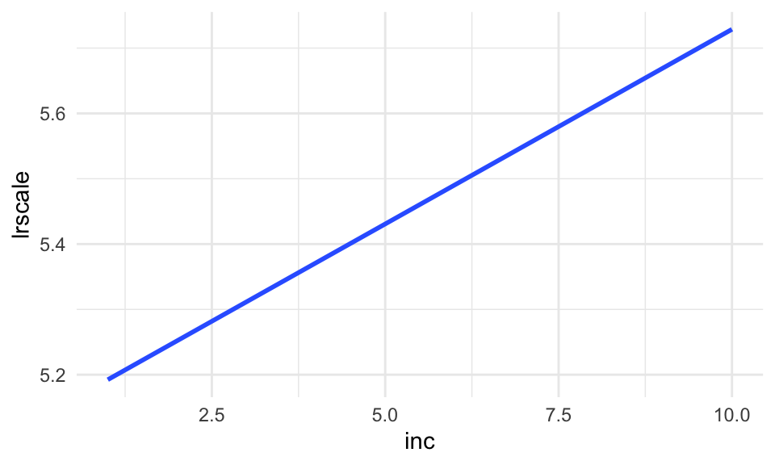
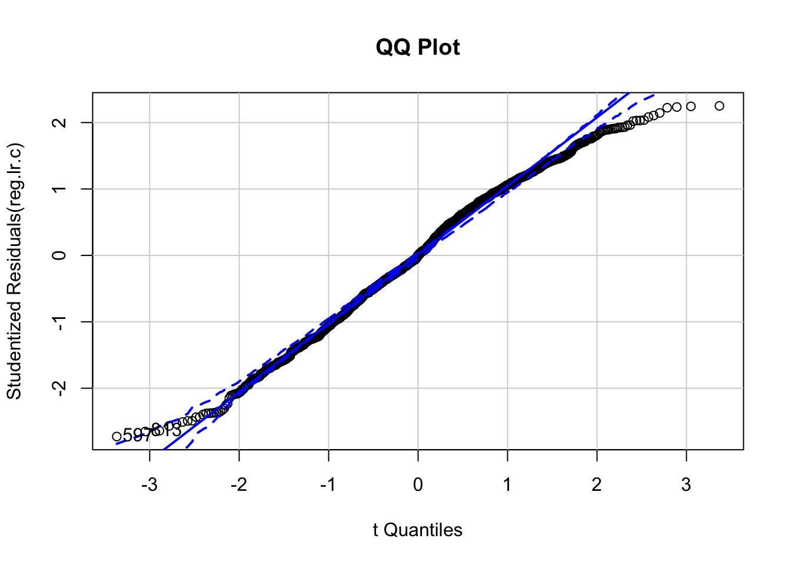

Kapitel 5 OLS regression
OLS (eller mindste kvadraters metode på dansk) regression er et af de mest anvendte redskaber i den politologiske værktøjskasse. Den simple lineære regressionsanalyse kan skrives som:
\[Y_i = \alpha + \beta X_i + \epsilon_i\]
Her er \(Y_i\) den afhængige variabel, vi ønsker at forklare forskelle i (eksempelvis hvor højreorienterede forskellige vælgere er). \(\alpha\) er konstanten, en parameter der angiver værdien på den afhængige variabel, når den uafhængige variabel (eller de uafhængige variable) er 0. \(\beta\) angiver ændringen i \(Y\) når \(X\) stiger med én enhed. Det er oftest \(\beta\), vi er interesseret i at undersøge effekten af på \(Y_i\). \(\epsilon_i\) er fejlleddet.
Vi vil i dette kapitel anvende den danske del af European Social Survey fra 2014. Bemærk at dette ikke er det fulde datasæt, så det er ikke alle observationer (rækker) såvel som variable (kolonner), der er med. Det fulde datasæt kan hentes i forskellige formater hos europeansocialsurvey.org. Det første vi gør er at indlæse vores datasæt i objektet ess.
ess <- read.csv("data/ess.csv")For at få et indblik i de inkluderede variable i datarammen og observationerne deri, bruger vi først head()-funktionen:
head(ess) male age edu inc union lrscale
1 0 66 6 4 0 4
2 1 57 5 9 1 7
3 0 56 6 6 1 5
4 0 74 3 2 0 5
5 0 49 4 9 1 8
6 1 58 3 3 1 5Som det kan ses er der seks variable. De er alle numeriske variable. male er køn, hvor 1 er mand og 0 er kvinde. age er alder i år. edu er uddannelse (i ISCED kategorier). inc er indkomst angivet i indkomstdecil (hvorfor der er 10 værdier). union angiver om man er medlem af en fagforening eller ej. lrscale er politisk orientering målt på en venstre-højre skala (hvor 0 er meget venstreorienteret og 10 er meget højreorienteret). Vi bruger summary() til at få deskriptiv statistik på de respektive variable:
summary(ess) male age edu inc
Min. :0.0000 Min. :15.00 Min. :1.000 Min. : 1.000
1st Qu.:0.0000 1st Qu.:35.00 1st Qu.:3.000 1st Qu.: 4.000
Median :1.0000 Median :49.00 Median :4.000 Median : 6.000
Mean :0.5339 Mean :49.27 Mean :4.263 Mean : 5.842
3rd Qu.:1.0000 3rd Qu.:63.00 3rd Qu.:6.000 3rd Qu.: 8.000
Max. :1.0000 Max. :95.00 Max. :7.000 Max. :10.000
union lrscale
Min. :0.0000 Min. : 0.000
1st Qu.:0.0000 1st Qu.: 4.000
Median :1.0000 Median : 5.000
Mean :0.6179 Mean : 5.481
3rd Qu.:1.0000 3rd Qu.: 7.000
Max. :1.0000 Max. :10.000 Alternativt kan vi også bruge funktionen glimpse(), der kan bruges, hvis du har åbnet pakken dplyr. Denne viser også antallet af observationer, der er i datarammen.
glimpse(ess)Rows: 1,285
Columns: 6
$ male <int> 0, 1, 0, 0, 0, 1, 0, 1, 1, 1, 1, 1, 1, 1, 1, 1, 1, 1, 1, 1, 1…
$ age <int> 66, 57, 56, 74, 49, 58, 21, 65, 37, 27, 65, 27, 17, 74, 69, 6…
$ edu <int> 6, 5, 6, 3, 4, 3, 2, 3, 7, 6, 3, 7, 2, 3, 3, 3, 7, 7, 3, 5, 6…
$ inc <int> 4, 9, 6, 2, 9, 3, 2, 6, 7, 9, 3, 7, 8, 5, 9, 6, 9, 10, 6, 5, …
$ union <int> 0, 1, 1, 0, 1, 1, 0, 1, 1, 1, 1, 1, 0, 0, 1, 0, 1, 0, 1, 0, 0…
$ lrscale <int> 4, 7, 5, 5, 8, 5, 10, 8, 6, 7, 5, 7, 8, 2, 9, 7, 7, 8, 8, 2, …I den resterende del af kapitlet gives først en introduktion til bivariate regressioner (altså med én uafhængig variabel), dernæst multivariate regressioner og til sidst introduceres en række relevante forudsætningstests.
5.1 Bivariat analyse
For at lave en OLS regression bruger vi funktionen lm(), der står for linear model. Denne funktion er en del af basispakken i R og kræver dermed ikke, at du åbner en bestemt pakke. For at lave en simpel OLS regression med en afhængig variabel og én uafhængig variabel, angiver vi den afhængige variabel før ‘~’ i funktionen og den uafhængige variabel efter. Sidst angiver vi datasættet. I nedenstående ønsker vi at undersøge om folk der har en højere indkomst, er mere højreorienteret (politisk orientering er dermed den afhængige variabel). Dette ønsker vi at undersøge med datarammen ess, hvilket vi gemmer i objektet reg.lr.
reg.lr <- lm(lrscale ~ inc, data=ess)Når vi har kørt ovenstående funktion får vi et objekt, der, når man bruger funktionen class() giver lm. Dette gør blandt andet, at når vi bruger funktioner på vores objekt, vil der blive taget højde for, at det er en lineær model (eksempelvis vil funktionen plot() på objektet kalde funktionen plot.lm()). For at se resultaterne af regressionen kan vi prøve at se, hvad der er i objektet reg.lr.
reg.lr
Call:
lm(formula = lrscale ~ inc, data = ess)
Coefficients:
(Intercept) inc
5.13282 0.05959 Som det kan ses af ovenstående, får vi ikke anden information frem end koefficienterne i modellen. Dette betyder i dette tilfælde konstanten (altså værdien på den afhængige variabel når inc er 0) og koefficienten for inc. Konstanten er 5.13282, hvilket betyder, at når inc er 0, er værdien på den afhængige variabel 5,13 (skæringen med y-aksen). Koefficienten for indkomst er 0.05959, hvilket betyder, at når indkomst stiger med én enhed, stiger politisk orientering med 0,0596. Disse informationer er generelt ikke tilstrækkelige, hvorfor det anbefales, at man bruger eksempelvis summary(), når man skal se resultaterne fra ens regression.
summary(reg.lr)
Call:
lm(formula = lrscale ~ inc, data = ess)
Residuals:
Min 1Q Median 3Q Max
-5.729 -1.609 -0.252 1.688 4.808
Coefficients:
Estimate Std. Error t value Pr(>|t|)
(Intercept) 5.13282 0.14661 35.01 < 2e-16 ***
inc 0.05959 0.02249 2.65 0.00816 **
---
Signif. codes: 0 '***' 0.001 '**' 0.01 '*' 0.05 '.' 0.1 ' ' 1
Residual standard error: 2.332 on 1283 degrees of freedom
Multiple R-squared: 0.005442, Adjusted R-squared: 0.004667
F-statistic: 7.02 on 1 and 1283 DF, p-value: 0.008158Her får vi et meget større output, der også indeholder signifikanstests, som vi ofte er interesseret i. Under Estimate ses koefficienterne (som ligeledes er angivet ovenfor). Under Std. Error får vi standardfejlene. t value viser t værdien og Pr(>|t|) giver p-værdien (og ved siden af disse er der, såfremt der er tale om et statistisk signifikant estimat, en indikator herfor). Nedenunder er en lang række af modelestimater, herunder frihedsgrader, determinationskoefficient, F-test m.v.
Hvis man finder ovenstående uoverskueligt, er der andre måder, at få præsenteret resultaterne i R. Én metode er at anvende pakken stargazer, der ofte anvendes til at eksportere tabeller. Først indlæser vi pakken (husk at installere den først, såfremt du ikke har den):
library("stargazer")Med pakken kan vi bruge funktionen stargazer(). Her angiver vi først, at vi er interesseret i objektet reg.lr og ønsker at få det præsenteret som tekst (standard er LaTeX-kode).
stargazer(reg.lr, type="text")
===============================================
Dependent variable:
---------------------------
lrscale
-----------------------------------------------
inc 0.060***
(0.022)
Constant 5.133***
(0.147)
-----------------------------------------------
Observations 1,285
R2 0.005
Adjusted R2 0.005
Residual Std. Error 2.332 (df = 1283)
F Statistic 7.020*** (df = 1; 1283)
===============================================
Note: *p<0.1; **p<0.05; ***p<0.01Her ses et mere brugervenligt output, der i format ligner det, man vil finde i artikler og bøger. Her kan vi ligeledes nemt se antallet af observationer i vores model (hvilket ikke var angivet eksplicit, da vi brugte summary()). Hvis vi gerne vil illustrere den lineære regressionslinje, kan vi bruge ggplot2 med tilføjelsen geom_smooth() og specificere, at det skal være en lineær model, der skal vises:
ggplot(ess, aes(x=inc, y=lrscale)) +
geom_smooth(method="lm", se=FALSE) +
theme_minimal()`geom_smooth()` using formula 'y ~ x'
Her kan det også ses, at når inc er 0, er værdien på y-aksen 5,13.
5.2 Multivariat analyse
Til nu har vi blot kørt en bivariat regressionsanalyse. Det er heldigvis nemt at udvide denne med flere uafhængige variable, der giver mulighed for at kontrollere for andre variable:
\[Y_i = \alpha + \beta_1 X_i + \beta_2 Z_i + \epsilon_i\]
For at gøre dette i R tilføjer vi et plus (+) efter den uafhængige variabel og derefter navnet på endnu en variabel, der skal inkluderes i modellen. Dette kan man fortsætte med at gøre, til ens model er korekt specificeret. I nedenstående er indkomst, køn, alder, uddannelse og fagforeningsmedlemsskab uafhængige variable.
reg.lr.c <- lm(lrscale ~ inc + male + age + edu + union, data=ess)Dette er gemt i objektet reg.lr.c. Ligesom i den bivariate analyse kan vi få resultaterne af modellen frem ved hjælp af funktionen summary():
summary(reg.lr.c )
Call:
lm(formula = lrscale ~ inc + male + age + edu + union, data = ess)
Residuals:
Min 1Q Median 3Q Max
-6.2257 -1.5882 0.0025 1.8217 5.1478
Coefficients:
Estimate Std. Error t value Pr(>|t|)
(Intercept) 5.278791 0.292423 18.052 < 2e-16 ***
inc 0.118345 0.024878 4.757 2.19e-06 ***
male 0.452107 0.129368 3.495 0.000491 ***
age 0.003823 0.003684 1.038 0.299628
edu -0.176360 0.037958 -4.646 3.73e-06 ***
union -0.270446 0.140951 -1.919 0.055241 .
---
Signif. codes: 0 '***' 0.001 '**' 0.01 '*' 0.05 '.' 0.1 ' ' 1
Residual standard error: 2.294 on 1279 degrees of freedom
Multiple R-squared: 0.04013, Adjusted R-squared: 0.03637
F-statistic: 10.69 on 5 and 1279 DF, p-value: 4.383e-10Outputtet følger samme struktur som i den bivariate analyse. Den eneste forskel er, at der nu er tilføjet fire ekstra variable og dermed fire ekstra estimater og dertilhørende standardfejl og statistiske tests. Hvis vi gerne vil sammenligne resultaterne i denne regression med den bivariate analyse, kan vi bruge stargazer() til at vise resultaterne fra begge modeller i én tabel. Dette gør vi ved at tilføje begge modeller til funktionen, adskilt af et komma:
stargazer(reg.lr, reg.lr.c, type="text")
====================================================================
Dependent variable:
------------------------------------------------
lrscale
(1) (2)
--------------------------------------------------------------------
inc 0.060*** 0.118***
(0.022) (0.025)
male 0.452***
(0.129)
age 0.004
(0.004)
edu -0.176***
(0.038)
union -0.270*
(0.141)
Constant 5.133*** 5.279***
(0.147) (0.292)
--------------------------------------------------------------------
Observations 1,285 1,285
R2 0.005 0.040
Adjusted R2 0.005 0.036
Residual Std. Error 2.332 (df = 1283) 2.294 (df = 1279)
F Statistic 7.020*** (df = 1; 1283) 10.693*** (df = 5; 1279)
====================================================================
Note: *p<0.1; **p<0.05; ***p<0.01Tolkningen af resultaterne er anderledes i den multivariate regression. Koefficienten for inc skal nu tolkes partielt, og altså som korrelationen mellem inc og lrscale, når vi kontrollerer for de andre variable (køn, alder, uddannelse og fagforeningsmedlemsskab). Konstanten er i denne sammenhæng værdien på den afhængige variabel, når alle andre variable har værdien 0.
5.3 Forudsætningstests
I Model 4 i Figur 4.1 kan det ses, at én observation gør det muligt at lave en regressionslinje. Dette viser vigtigheden af at kende sine data, og især om de modeller der estimeres, bygger på realistiske antagelser. Som med alle modeller vi estimerer, bygger disse på bestemte antagelser. Disse antagelser kan være meget heroiske i forhold til strukturen af vores data, og dermed blive brudt. Nogle af disse antagelser kan heldigvis belyses empirisk, hvor andre kræver viden omkring selve den proces, der har genereret vores data.
Det er for det første vigtigt, at vi har et godt forskningsdesign. Dette holder for alt vi laver - ikke kun lineære regressionsanalyser. Som det siges: You can’t fix by analysis what you bungled by design.
Det er for det andet vigtigt, at vi bruger de rigtige variable - og hverken færre eller flere. Med andre ord skal vi sikre os, at vi har den korrekte model, og ikke en fejlspecificeret model. Hvis vores model er underspecificeret, altså vi undlader vigtige variable, får vi biased estimater. Det samme kan vi få, hvis vi overspecificerer vores model, eksempelvis ved at smide alle variable ind i vores model. Det er derfor vigtigt, at vi bruger vores teoretiske viden, når vi specificerer vores regression.
I den resterende del af kapitlet vil forskellige forudsætningstests blive gennemgået. Til at gøre dette vil vi bruge to forskellige pakker, car og MASS. Det første vi gør er at åbne pakkerne (husk at installere dem først, hvis du ikke har dem).
library("car")
library("MASS")5.3.1 Linearitet
Det første vi skal undersøge empirisk er, om der et lineært forhold mellem vores uafhængige og afhængige variable. Hvis der ikke er dette, vil vi få biased estimater, og dermed kan vi ikke tro på resultaterne. Vi kunne gøre dette ved at kigge på punktdiagrammer for den afhængige variabel og hver af de uafhængige variable, men dette vil ikke tage højde for, at relationen mellem den afhængige variabel og én uafhængig variabel, kan ændres, når man tager højde for de andre uafhængige variable. Derfor er vi nødt til at kigge på partielle korrelationer.
Til at gøre dette vil vi bruge funktionen crp(), der er en forkortelse for component + residual plot. Disse plots giver os en grafisk illustration af, om der er et lineært forhold mellem hver af den afhængige variable og hver af de uafhængige variable, når der tages højde for de andre variable.
Det gode ved disse plots er, at de også tilføjer en linje, der bedst passer til data (den grønne linje). Den røde linje er den lineære relation. Vi vil gerne have, at der er et klart overlap mellem de to linjer, så der rent faktisk er et lineært forhold mellem vores variable. Her kører vi funktionen crp() på vores objekt med den multiple lineære regression, vi estimerede i forrige sektion.
crp(reg.lr.c)Der er et pænt overlap i de figurer, hvor det er muligt at estimere begge linjer. Dette er ikke muligt i alle tilfælde, og mere specifikt ikke for de uafhængige variable, der er binære.
Hvis der er problemer med ovenstående, skal man overveje en alternativ modelspecifikation. Dette kan være ved at inkludere variable, der giver et mere lineært forhold mellem de respektive variable i modellen, eller transformere de eksisterende variale i modellen (eksempelvis via en logaritmisk transformation).
5.3.2 Outliers og indflydelsesrige observationer
Det næste vi skal belyse er forekomsten af outliers og indflydelsesrige observationer. En outlier er en observation, der ligger langt fra den den lineære tendenslinje og dermed ikke følger den trend, man burde forvente med udgangspunkt i de andre observationer. For at undersøge dette skal vi teste residualet for en observation. Til at gøre dette estimerer vi studentiserede residualer, der fortæller os, hvor overraskende et punkt er relativt til tendenslinjen uden det pågældende punkt. Her bruger vi funktionen outlierTest().
outlierTest(reg.lr.c) No Studentized residuals with Bonferroni p < 0.05
Largest |rstudent|:
rstudent unadjusted p-value Bonferroni p
597 -2.72712 0.0064764 NAI outputtet er vi interesserede i Bonferonni p-værdier, og konkret vil vi gerne have, at ingen af disse er signifikante. I outputtet kan vi i ovenstående se, at der ikke er studentiserede residualer med Bonferonni p-værdier lavere end 0,05, hvorfor der ikke er et problem med ekstreme observationer.
Det næste vi kigger på er såkaldte leverage plots, der skal belyse om der er problemer med ekstreme værdier forudsagt af hver af de uafhængige variable. Til at få dette, bruger vi funktionen leveragePlots(). Her finder vi en lige fordeling omkring de horisontale linjer, hvilket indikerer, at der ikke er problemer med outliers.
leveragePlots(reg.lr.c) Lignende plots der bruges til at kigge på indflydelsesrige observationer, er added-variable plots, der laves med funktionen avPlots(). Disse undersøger effekten af de uafhængige variable på den afhængige variabel, hvor vi i nedenstående ikke finder evidens for, at enkelte observationer afviger betydeligt og ekstremt fra andre.
avPlots(reg.lr.c)Som det næste kan vi kigge på Cook’s D, hvor skal se hvilke observationer der har Cook’s D værdier der er større end 4/(n-k-1), hvor n er antallet af observationer og k er antallet af variable i vores model.
cutoff <- 4 / (( nrow(ess) - length(reg.lr.c$coefficients) - 1 - 1 ))
plot(reg.lr.c, which=4, cook.levels=cutoff)Vores cutoff er 0.0031323, og i figuren vises de observationer, der overskrider denne værdi.
Det næste vi kan gøre er at kigge på et
5.3.3 Normalfordelte fejlled
Bliver tilføjet senere.
qqPlot(reg.lr.c, main="QQ Plot")
[1] 597 813–
sresid <- studres(reg.lr.c)
hist(sresid, freq=FALSE,
main="Distribution of Studentized Residuals")
xfit<-seq(min(sresid),max(sresid),length=40)
yfit<-dnorm(xfit)
lines(xfit, yfit)–
5.3.4 Heteroskedasticitet
Bliver tilføjet senere.
ncvTest(reg.lr.c)Non-constant Variance Score Test
Variance formula: ~ fitted.values
Chisquare = 0.06267413, Df = 1, p = 0.80232–
spreadLevelPlot(reg.lr.c)
Suggested power transformation: 0.9625135 –
library("lmtest")Loading required package: zoo
Attaching package: 'zoo'The following objects are masked from 'package:base':
as.Date, as.Date.numericbptest(reg.lr.c, studentize = FALSE)
Breusch-Pagan test
data: reg.lr.c
BP = 14.36, df = 5, p-value = 0.01348–
library("sandwich")
coeftest(reg.lr.c)
t test of coefficients:
Estimate Std. Error t value Pr(>|t|)
(Intercept) 5.2787906 0.2924231 18.0519 < 2.2e-16 ***
inc 0.1183454 0.0248777 4.7571 2.187e-06 ***
male 0.4521067 0.1293676 3.4947 0.0004907 ***
age 0.0038226 0.0036839 1.0377 0.2996278
edu -0.1763603 0.0379581 -4.6462 3.731e-06 ***
union -0.2704461 0.1409507 -1.9187 0.0552411 .
---
Signif. codes: 0 '***' 0.001 '**' 0.01 '*' 0.05 '.' 0.1 ' ' 1coeftest(reg.lr.c,vcov=vcovHC(reg.lr.c,type="HC0"))
t test of coefficients:
Estimate Std. Error t value Pr(>|t|)
(Intercept) 5.2787906 0.3055163 17.2783 < 2.2e-16 ***
inc 0.1183454 0.0248774 4.7571 2.187e-06 ***
male 0.4521067 0.1285771 3.5162 0.000453 ***
age 0.0038226 0.0038626 0.9896 0.322536
edu -0.1763603 0.0376846 -4.6799 3.175e-06 ***
union -0.2704461 0.1405988 -1.9235 0.054635 .
---
Signif. codes: 0 '***' 0.001 '**' 0.01 '*' 0.05 '.' 0.1 ' ' 1coeftest(reg.lr.c,vcov=vcovHC(reg.lr.c,type="HC1"))
t test of coefficients:
Estimate Std. Error t value Pr(>|t|)
(Intercept) 5.2787906 0.3062321 17.2379 < 2.2e-16 ***
inc 0.1183454 0.0249357 4.7460 2.308e-06 ***
male 0.4521067 0.1288783 3.5080 0.0004671 ***
age 0.0038226 0.0038717 0.9873 0.3236674
edu -0.1763603 0.0377729 -4.6690 3.346e-06 ***
union -0.2704461 0.1409282 -1.9190 0.0552024 .
---
Signif. codes: 0 '***' 0.001 '**' 0.01 '*' 0.05 '.' 0.1 ' ' 1–
5.3.5 Multikollinaritet
Bliver tilføjet senere.
vif(reg.lr.c) inc male age edu union
1.263889 1.016578 1.048884 1.190281 1.144920 sqrt(vif(reg.lr.c)) > 2 inc male age edu union
FALSE FALSE FALSE FALSE FALSE –